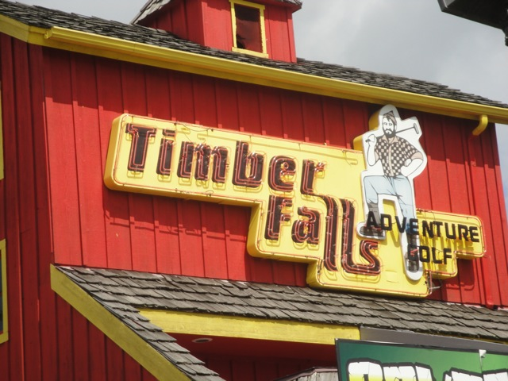
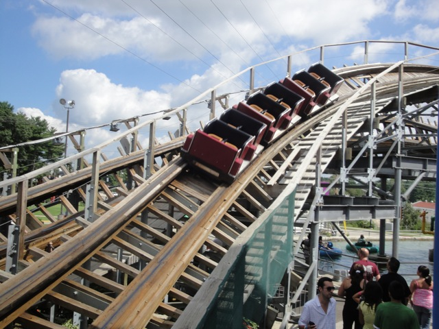

| |

Timber Falls Review

Technically, Timber Falls wasn't a theme park. Timber Falls was just a small Golf'N'Stuff style place. There really wasn't much to do here. In fact, the only reason this place is worth remembering is because of wooden coaster, Hellcat. It may have been a small little wooden coaster, but you can easily tell that it was the main focus of the park. It dominated the place, circling around the entire park twice, and dominating every corner of the park. The locals knew of it as the roller coaster, as when I was getting directions to the bank from Walgreens, they told me to pass the coaster despite the fact that Mt. Olympus was less than a mile away (I guess even the locals prefer to pretend that the park doesn't exist). But anyways, yeah. HellCat is the main reason for a coaster enthusiast to go to Timber Falls. And sadly, but not surprisingly, a tiny little Golf'N'Stuff style place just can't afford to maintain a wooden coaster like Hellcat as I did hear that in its last years, the ride got extremely rough, and sure enough, the park couldn't afford to keep going, and so it closed down. Really sad, but sadly, not surprising. HellCat was a kickass wooden coaster. It was the best coaster in Wisconson. I totally would've recommended stopping on by.
Rollercoasters
There is a link to a review of all the Rollercoasters at Timber Falls.
Top Coasters
Hellcat Review

Flat Rides
Now I didn't ride any flat rides at Timber Falls. But I did see that they had a Skyscraper as an upcharge. Now I rode the skyscraper at PNE Playland and based on the one there, it may not be a truely crazy experience, but it is FAST!!!! REALLY FAST!!!! And of course, its a ton of fun. Hopefully you can find another Skyscraper and ride that as these are really fun rides.
 Yeah. These are a fun upcharge. =)
Yeah. These are a fun upcharge. =)
Water Rides
Though I didn't ride any of the water rides here, Timber Falls did have two despite its small size. They had a log flume and bumper boats. Now bumper boats may be common at Golf'N'Stuff style places, but log flumes are not. And it looked like a fun one too. Not amazing or anything, but still.
 Yeah. I wish Golf'N'Stuff in Ventura would get a log ride like this, or better yet, a HellCat Clone.
Yeah. I wish Golf'N'Stuff in Ventura would get a log ride like this, or better yet, a HellCat Clone.
Dining
I did not eat at Timber Falls, though it was probably just typical Mini Golf Food.
Theming and Other Attractions
Here are the reviews of all the other stuff at Timber Falls. Well, for theming, theres not much other than the typical theming you'd find on other mini golf courses. And speaking of minature golf, thats another thing you can do at Timber Falls, since this place technically is a mini golf course first, and a theme park second. I never looked at the course, but I'd imagine that it'd be fun. And I'd assume that they have an arcade like most other mini golf style places. So theres other fun things to do at Timber Falls.
In Conclusion
Timber Falls was a great little spot to have fun. First off, the wooden coaster that they have was amazing. It was without a doubt, the best in Wisconson (I guess Cyclops is the new best now). It was much better than any of the coasters at Mt. Olympus. =( So yeah, this wasn't a credit whoring stop like Knuckleheads. Yeah, they have a credit there too. But I'll most likely never go back there again now that I have it. I would've totally gone back to Timber Falls though. HellCat is totally worth a bunch more re-rides. And hey, the rest of the place looked fun. I would've liked to try their log flume, and maybe even see how that Mini-Golf of theirs is. It's a shame that the park closed down, but again. You can totally see how a place this small couldn't afford to keep an agressive Gravity Group woodie running. Plus, being next to the biggest theme park in the state (Even if it does suck) isn't gonna be good for a place like this. Even you're the type who hates credit whoring and hates going to tiny places to seek out worthless credits for the sake of boosting your count, you still should've checked out Timber Falls. Trust me, this thing was no Wacky Worm. HellCat was truely worth something. =(
Enthusiast FAQs.
*Are there kiddy coaster restrictions? - Timber Falls doesn't have any kiddy coasters.

Tips
*I'm not sure whether they allow POVs on Hellcat or not. Though it doesn't matter now. =(
*Get the all day pass. You're gonna want some re-rides on HellCat.
*Have Fun!!!
Theme Park Category:
Small Park
Location
Wisconson Dells, Wisconson, USA
Last Day Visited
August 14, 2010
Video
There will never be a Timber Falls video. =(
Complete Update List
2010
TPR's Middle America Trip
Here's a link to the parks website.
Home
|